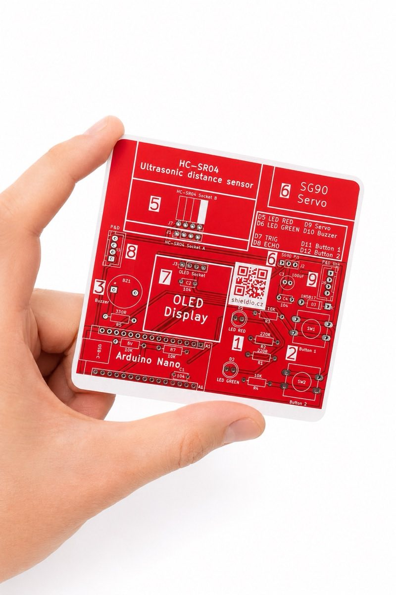
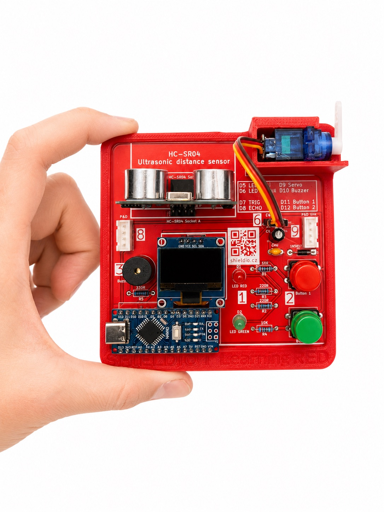

Baseline · Úroveň 3
Deska RED.
Robotika v pohybu — ultrazvukový senzor vzdálenosti, servo a OLED displej na jedné desce. Výchozí projekt: funkční prototyp závory.
RED · ve vývoji

Robotika v pohybu — ultrazvukový senzor vzdálenosti, servo a OLED displej na jedné desce. Výchozí projekt: funkční prototyp závory.
Nejnáročnější baseline spojuje ultrazvukové měření vzdálenosti, servo a displej na jedné 100×100 mm desce — s popisy součástek přímo na plošném spoji.


Deska RED je aktuálně ve vývoji — napiš nám a domluvíme se na dalších krocích nebo ukázce.